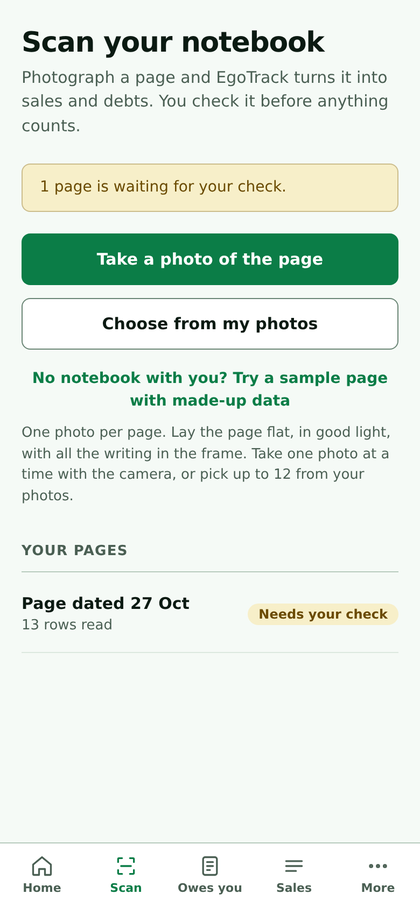
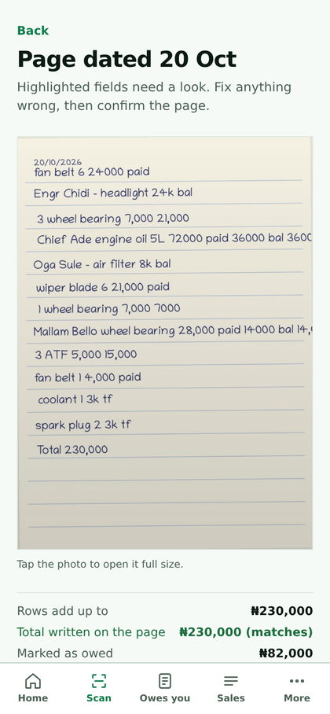
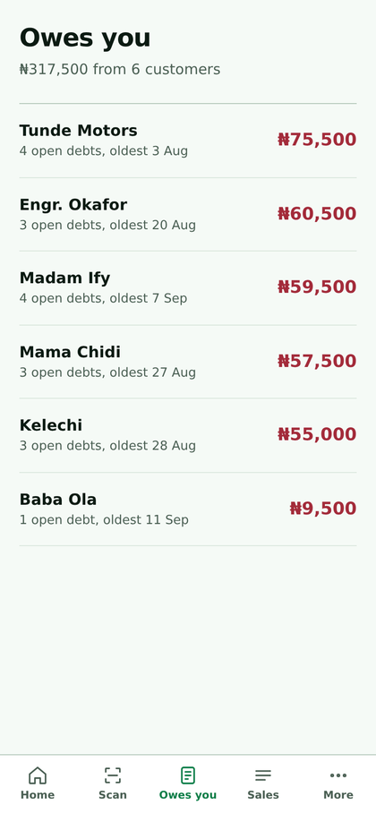
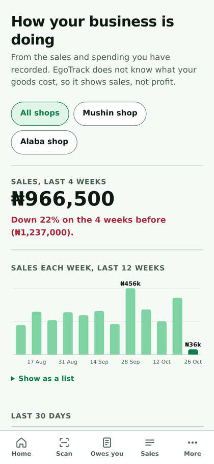

GAVS Hackathon · Theme: MSME Finance and Compliance · Idea submission
From scattered records to a finance-ready file.
EgoTrack helps a micro business organise its records, shows what is missing, and prepares what a credit option or support scheme asks for. The owner approves every step. It is not a lender.
The problem
Records are scattered
Notebooks, receipts, phone notes and memory. Nothing adds up to one picture of the business.
Performance is hard to show
A micro business cannot easily show cash flow, credit given or repayments to anyone outside it.
Requirements are hard to find
What a credit option or scheme asks for sits in many places, and the owner does not know what is missing.
We have 30 merchant interviews and 22 real notebook pages from Lagos. We have no India interviews yet. The Udyam figure of about 7.88 crore registered micro enterprises is a press report of the Ministry of MSME dashboard for May 2026 and should be checked at the source.
How it works
Five steps. The first two exist in the working app. The rest are what this challenge would build.
- 1 CaptureVoice, text, a photo of a record, or manual entry.Built: photo and manual. Voice to build.
- 2 StructureSales, expenses, customer credit and repayments. Unclear items are asked about, never assumed.Built
- 3 UnderstandA plain-language summary and a list of missing information.Partly built: weekly reports exist.
- 4 MatchCompare the profile with published requirements of credit options and schemes.To build
- 5 PrepareAction plan, document checklist and draft application details. The owner approves.To build
Filled: built today. Solid outline: partly built. Dashed outline: to build in this challenge. Everything happens with the owner's consent.
Built today
A working app with a made-up demo shop. The screens are from the Nigerian build and show naira. No paying customers yet.




The agent prepares. The owner decides.
What the agent does
Explains the business in plain words. Lists what information is missing. Shows what a credit option or scheme asks for, with the official source and date. Organises documents and drafts application details.
What it will not do
Lend, rate creditworthiness, promise or imply approval, submit anything or share personal data without explicit approval, or guess when a record is unclear.
How we keep it honest
Every requirement carries its source link and the date it was read. Simulated integrations are labelled. Out-of-date items are flagged.
Adapting to India, without pretending we know it
| Need | Today | Planned for this challenge |
|---|---|---|
| Voice entry | Not built | Speak a sale or expense. The app turns it into a record and asks the owner to confirm. |
| Local language | English only | One Indian language, chosen with the users we can reach. None promised yet. |
| Low bandwidth, entry-level Android | A web app that installs on a phone. Offline sales wait on the phone. | Tested on a low-end Android on a weak network. |
| Scheme requirements | Not built | A small curated set from official sources, each with link and date. |
What carries over: scattered records, confirm-before-it-counts, credit tracking and plain summaries. What changes: currency, language, payments, schemes and the rules on data and credit. What we do not know: any India user. The first step is to talk to owners and an adviser who knows the lending side.
What we would build in the prototype round
- Pick the problem statement and map the owner's journey from record to application.
- Voice and text entry become structured records. The owner confirms anything unclear.
- The agent writes a plain summary and lists what is missing.
- A checklist for two or three published credit or support options, each with its source.
- An action plan and draft details, demonstrated with real micro business owners.
We will show a working flow from a spoken or photographed record to a finance-ready summary and checklist. We will not claim loan decisions, approval odds or live government or bank submission. Any integration we cannot access will be simulated and labelled.
The team
Victor Oluebubechukwu Nwokolo, founder, Lagos. Software engineering student. Built the working product, interviewed Lagos traders, and designed this idea. Finalist at Ecobank InnovateX 2026 for the underlying product. Portfolio.
Alghazali Shuaib, technical co-founder, joining. Backend and mobile.
We are looking for a mentor who knows micro and small business lending in India, introductions to owners willing to test, and feedback on which published options to cover first. No company is registered yet.